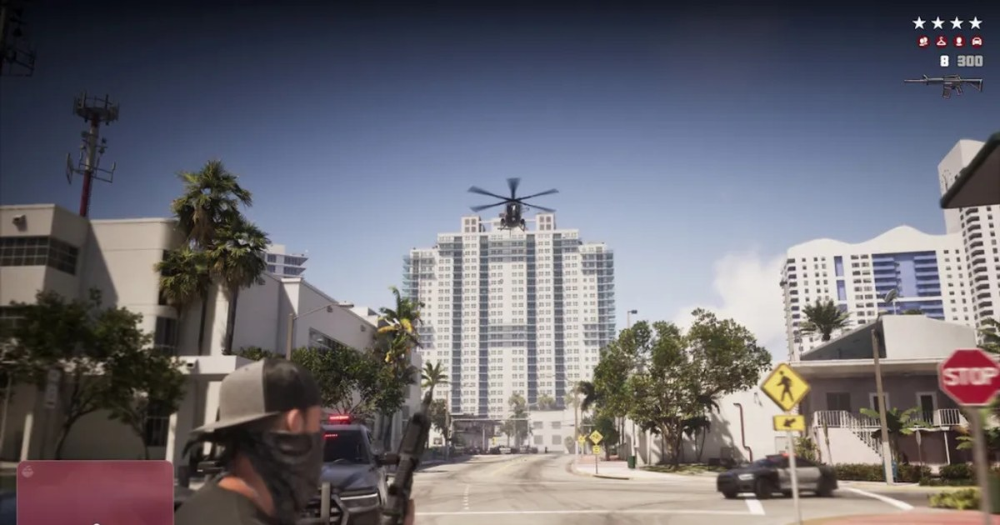

A Japanese VTuber just escaped GTA 6's 'impossible' six-star wanted level — through a portal to 2002 Vice City
Japanese VTuber Haigure Tamao has done what GTA 6 says can't be done: escaped a six-star wanted level. His way out was the game's secret Tommy Vercetti portal — step through to 2002 Vice City, come back to Leonida with zero stars.

Grand Theft Auto VI says a six-star wanted level is impossible to escape. The game tells you so on screen — the whole map goes under search, the usual tricks stop working, and even trying to flee by jet draws missile fire. A Japanese VTuber just proved the game wrong, and his escape route runs through 2002.
Haigure Tamao, streaming with a VTuber avatar, set out to test whether the secret portal hidden in GTA 6's Tommy Vercetti Easter egg could wipe a six-star wanted level. It did. He went in with the full force of Leonida on him and came back clean.
The escape
The portal is the payoff of one of the game's deepest secrets. Players have to solve a puzzle spanning a dozen electrical substations across Leonida, visited in a specific order — the letters painted on their walls spell out "LIFEISPASSINGMEBY," a cheat code from the original Vice City that sped up in-game time. Finish it and a text message points to Reactor 2 at the Turtle Head Power Station, where a portal opens between 7 PM and 6 AM on the in-game clock. Step through and Jason lands in a recreation of the original Malibu Club, rendered in PS2-era graphics, with returning character Kent Paul — once again voiced by Danny Dyer. The portal itself was first found by YouTuber Memeio, who spent three days following the clues across the map.
Tamao's first attempt failed — he couldn't survive the chase long enough to reach the portal. So he solved a second secret first: the president's hidden bunkers, which hand over a tank. With the tank he caused chaos near the power station, hit six stars with only minutes to spare before the portal closed, and drove through. On the other side, in retro Vice City, his wanted level was gone instantly. The real question was whether it would come back with him. It didn't.
"I finally did it! I went from a Wanted level of six to zero!" he celebrated, in Dexerto's translation.
A second way out — and one that doesn't work
Tamao isn't the only one who cracked it. A second creator, Fear, found a shorter route: simply walking into the hidden tank bunker clears six-star heat too. Why that works is unclear — the bunker keeps the player inside Leonida, so the portal's logic about leaving the map shouldn't apply. The working theory is that the police can't track a player inside the bunker.
There is also a control case that proves this isn't just about hiding underground: the underwater facility does not clear six-star heat. So the bunker result reads as a quirk of the game, not a general rule.
Is it supposed to work?
Rockstar hasn't commented, and nobody can say yet whether the escape is intentional or just a side effect of the wanted level not carrying over between two worlds. The portal route has only been shown working once, so whether it repeats every time is unconfirmed — but two separate escape routes in the same week, after five days of players insisting six stars was a death sentence, is the kind of discovery that rewrites how the game's hardest chase is understood.
Five days after launch, the "impossible" wanted level has an exit. It just happens to run through a nightclub from 2002.
Sources: Japanese VTuber actually escapes GTA 6's "impossible" 6-star Wanted level (Dexerto) · GTA 6 Player Escapes the 'Impossible' Six-Star Wanted Level Using a Secret Easter Egg (VGTimes) · GTA 6 Players Abuse Vice City Easter Egg to Escape the 'Impossible' Six-Star Wanted Level (Beebom) · GTA 6 Six-Star Wanted Level Escape: Two Routes Found (Of Zen and Computing)
Gear up: Razer — mice, keyboards, headsets and laptops.